Fisioterapia especializada e Pilates para uma vida com mais conforto e menos limitações.
Atendimentos no consultório no Janga (Paulista - PE) e com a comodidade do Atendimento a Domicílio em Paulista, Olinda e região. Reabilitação neurofuncional, gerontologia funcional (pessoa idosa), pós-operatório de cirurgia plástica, traumato-ortopedia e Pilates Clínico.
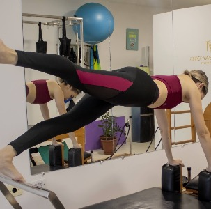
Atendimento a Domicílio
Paulista, Olinda e região
Estúdio no Janga
Av. Dr. Cláudio José G. Leite, 571 - Sala 14
Dra. Caroline Melo
Pós-Graduada em Fisioterapia Neurofuncional
Reabilitação pautada na ciência e no bem-estar humano integral.
Sou a Dra. Caroline Melo (CREFITO 315194-F), fisioterapeuta pós-graduada em Fisioterapia Neurofuncional, com sólida experiência em reabilitação motora, atendimento domiciliar, pós-operatório em cirurgia plástica e Pilates Clínico.
Minha conduta clínica é estruturada com base na Classificação Internacional de Funcionalidade, Incapacidade e Saúde (CIF da OMS), garantindo que cada tratamento considere não apenas o sintoma, mas a funcionalidade, o bem-estar emocional e a qualidade de vida global de quem atendo.
Formação & Credenciais Acadêmicas
Pós-Graduação em Neurofuncional
Instituto Paiva • 2022
Formação Completa em Pilates
Método Clássico e Contemporâneo • 2020
Bacharelado em Fisioterapia
UNIBRA • 2019
Abordagem Baseada na CIF
Escuta ativa e metas funcionais mensuráveis
Áreas de Atuação da Dra. Caroline Melo
Conheça as modalidades clínicas disponíveis no consultório, estúdio e em domicílio.
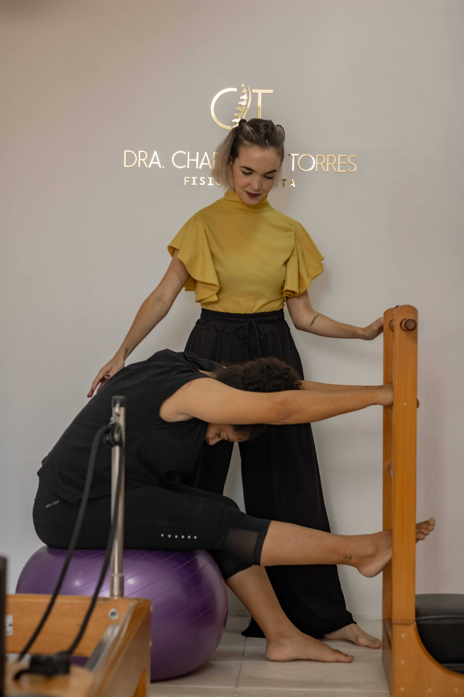
Pilates em Casa, em Eventos com Grupos e no Estúdio
Prática personalizada adaptada às suas necessidades: aulas particulares no conforto do seu lar, vivências corporais e aulas em grupo para eventos, ou sessões completas em aparelhos no estúdio.
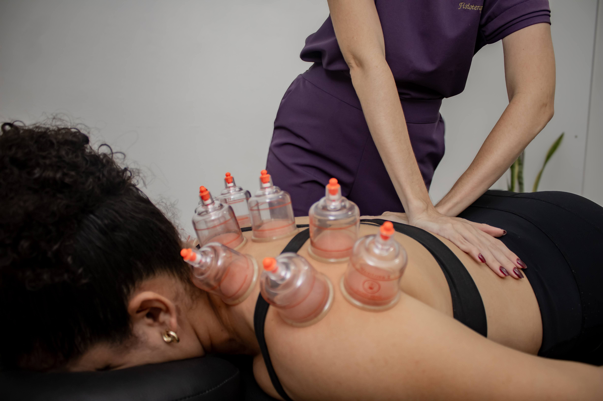
Atendimento a Domicílio
Fisioterapia completa no conforto e na segurança do seu lar. Ideal para pacientes em pós-operatório recente, idosos ou quem possui rotina intensa em Paulista e adjacências.
Fisioterapia Neurofuncional
Tratamento e reabilitação de sequelas motoras e neuromusculares (AVC, Doença de Parkinson, neuropatias e traumatismos). Estimulação da neuroplasticidade e do equilíbrio.
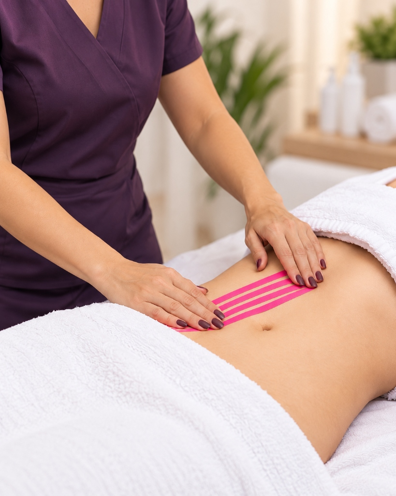
Pós-Operatório de Cirurgia Plástica
Acompanhamento especializado para lipoaspiração, abdominoplastia e mamoplastia. Drenagem linfática manual, ultrassom terapêutico, manejo de fibroses e seromas.
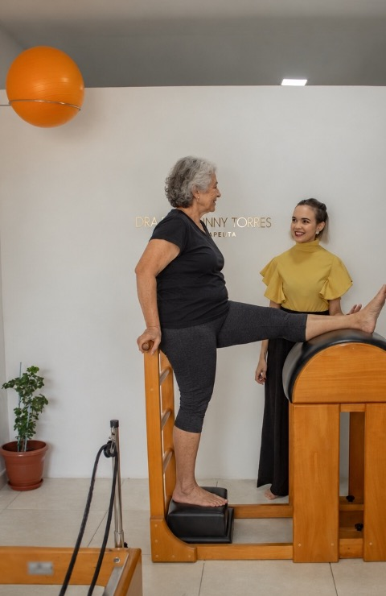
Fisioterapia da Pessoa Idosa
Gerontologia funcional voltada à mobilidade, prevenção e reabilitação de quedas, fortalecimento muscular e preservação da independência nas atividades de vida diária.
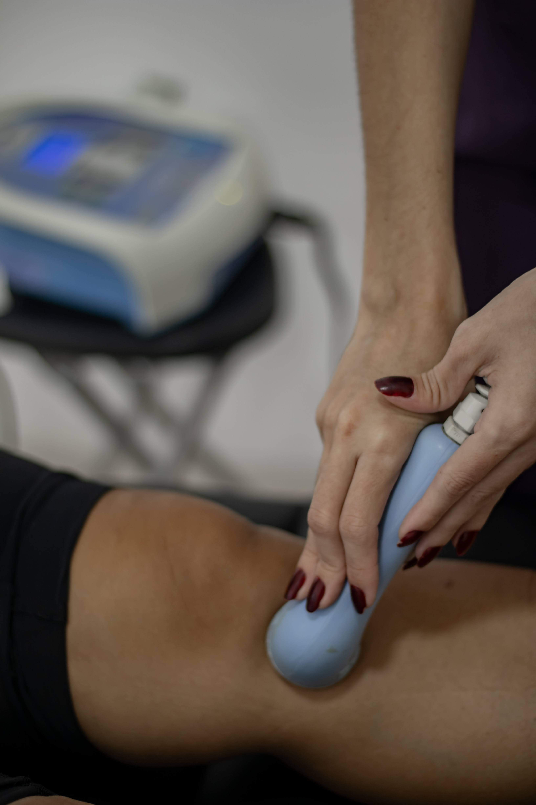
Fisioterapia Traumato-Ortopédica
Avaliação e tratamento de dores na coluna, hérnias de disco, tendinites, bursites, entorses e disfunções posturais. Alívio de dores agudas e crônicas com cinesioterapia.
Pilates no Estúdio: Aparelhos Clássicos e Atenção Individualizada
Nosso espaço foi cuidadosamente planejado para oferecer uma experiência transformadora. Equipado com a linha completa de aparelhos originais do método Pilates, você treina com segurança, conforto e prescrição direta da Dra. Caroline Melo.
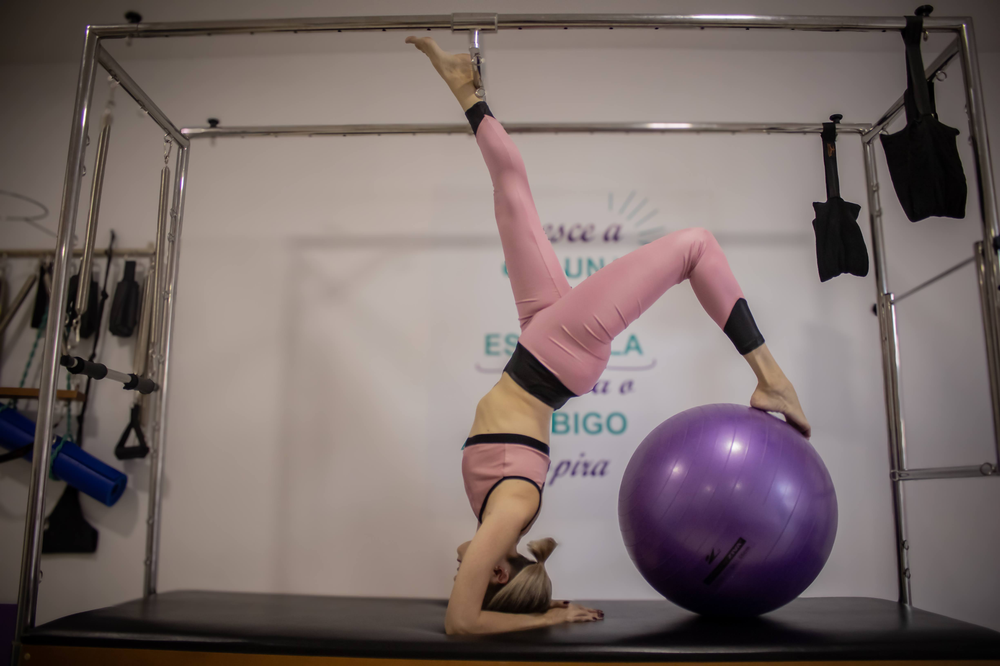
Cadillac (Trapeze Table)
Permite exercícios em suspensão, tração suave da coluna vertebral, ganho progressivo de flexibilidade e fortalecimento profundo sem sobrecarga articular.
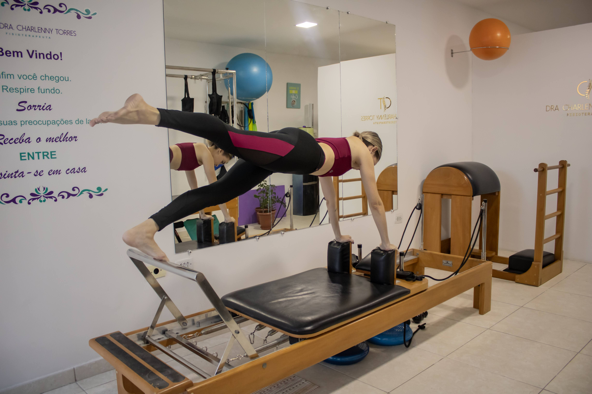
Reformer
O aparelho mais versátil do Pilates. Utiliza sistema de molas e carrinho deslizante para alinhamento postural dinâmico, equilíbrio e estabilização de core.
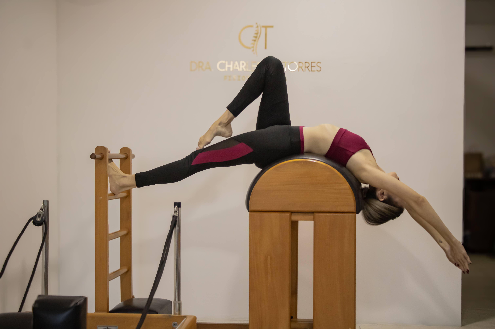
Ladder Barrel
Design anatômico em arco acoplado à escada de madeira, perfeito para extensão torácica, descompressão lombar e trabalho de consciência corporal refinado.
Quer conhecer nosso estúdio e fazer uma aula experimental?
Atendimentos com número reduzido de alunos por sessão para garantir correção postural imediata e adaptação para qualquer restrição ou dor. Localizado na Av. Dr. Cláudio José Gueiros Leite, nº 571, Sala 14 - Janga, Paulista - PE.
Descubra a conduta recomendada para o seu caso
Responda em menos de 1 minuto para ver a conduta clínica da Dra. Caroline Melo e enviar suas informações direto para o WhatsApp.
Acompanhe a rotina clínica no Instagram
Dicas diárias sobre postura, reabilitação motora, exercícios de Pilates e bastidores dos atendimentos no estúdio e a domicílio.
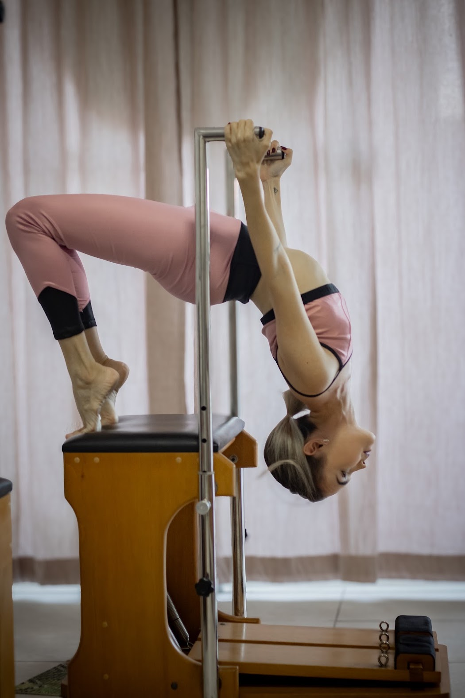
Controle, força e extensão: superando limites no estúdio com o método Pilates.
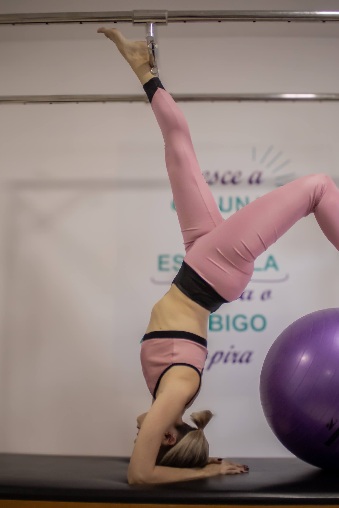
"Cresce a coluna, fecha a escápula": o corpo alcança o que a mente acredita.
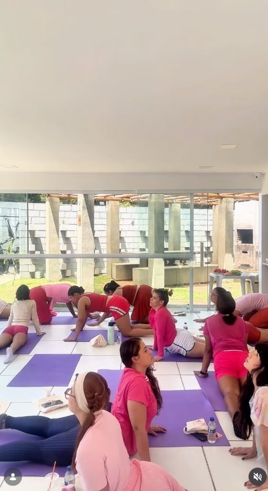
Conexão, movimento e bem-estar: práticas e vivências de Pilates em grupo.
Dúvidas Frequentes
Esclareça as dúvidas mais comuns sobre o atendimento, autonomia profissional e agendamento.
Ficou com alguma dúvida específica sobre o seu caso?
Converse diretamente com Caroline pelo WhatsApp sem nenhum compromisso.
Atendimento no Janga — Paulista/PE
Atendimento clínico e Pilates no Janga, com assistência fisioterapêutica domiciliar disponível em Paulista, Olinda e região.
Caroline Melo Fisioterapia
Caroline Melo • CREFITO 315194-F
Atendimento Presencial & Pilates
Av. Dr. Cláudio José Gueiros Leite, nº 571, Sala 14
Janga — Paulista/PE
Atendimento Domiciliar
Atendimento fisioterapêutico domiciliar disponível em Paulista, Olinda e região (sob consulta prévia).
Pilates para Eventos
Formato e localização definidos conforme cada evento.
E-mail Profissional
Pronta para cuidar da sua saúde com a atenção que você merece?
Fale agora com a Dra. Caroline Melo e agende seu atendimento em domicílio ou no estúdio de Pilates em Paulista - PE.